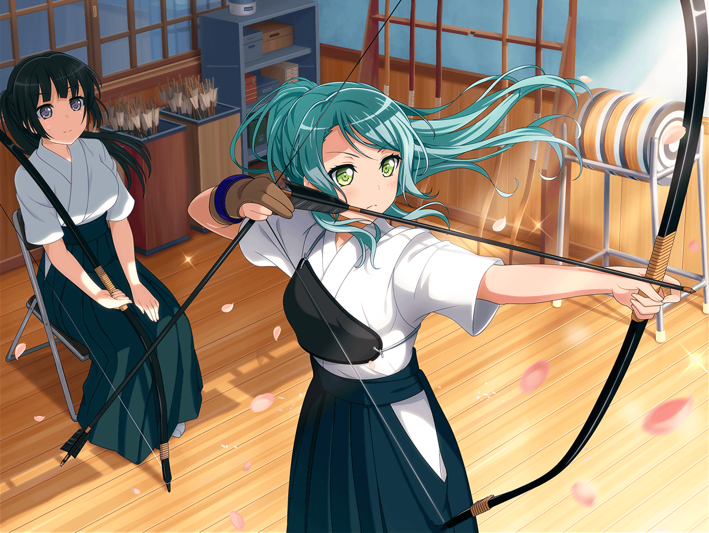

スタジオ
あこ
へ〜、そっか！
それで、コンクールに出る事にしたんだ！
燐子
うん……
みんなのお陰で……わたしの中で決心がついて……
あこ
そっか。りんりん、よかったね！
あこも、りんりんが部活とかにチャレンジしてくれて
うれしい！
燐子
うん……！ あこちゃんがアドバイスをくれた
おかげだね。でも……
燐子
わたし……部活見学のときも……
氷川さんや、若宮さん達に助けてもらったりして……
燐子
自分のこと……なんだし、
次はもっと……自分から動けたらいいなって……
あこ
うんっ！ 大丈夫だよ！
りんりん、ここまで来れたんだもん。
あこ、応援してるよっ！
燐子
あこちゃん……ありがとう
紗夜
（白金さん……少し強引に動いてしまったけれど、
部活体験の経験が糧になったようね。よかった）
紗夜
（白金さんが、もっと能動的になれるように、
私に何かできることはないかしら……）
紗夜
……
リサ
紗夜～？
さっきから、俯いてどしたのー？
紗夜
……そうだわ。
今井さん、ちょっとよろしいでしょうか？
リサ
え？
まぁ、今日の練習はもう終わったからいいけど……
どうしたの？
紗夜
ここではちょっとあれなので……
その、場所を変えませんか？
リサ
何やら、訳アリって感じだね。
ん～、じゃあ、ファミレスにでも行こっか？

ファミリーレストラン
リサ
それで？
何かあったの？ もしかして、ヒナのこと？
紗夜
い、いえ！ 日菜のことはもう……
今日は、白金さんのことで……
リサ
燐子？ 何かあったの？
紗夜
実は……
リサ
なるほどね。
燐子が積極的になれるように、応援してあげたい……と
紗夜
そうですね。
なんというか、背中を押してあげたいというか……
リサ
応援……ていうか手助けをしたい、的な？
紗夜
ええ……恐らく
リサ
なるほどね〜。
燐子が積極的に、かあ
紗夜
白金さんは、真剣に変わろうとしています。
だから……
リサ
うーん……
どうするのがいいかなあ？ あんまり背中を押して
あげちゃうと、燐子も萎縮しちゃいそうだし……
リサ
かと言って、何もしないのも、
何だかもどかしいよね～
紗夜
い、今井さんなら、
こういう時、良い方法をご存知かと思ったのだけど……
リサ
あはは！
まあ、確かにアタシ、世話焼きだからな〜……
紗夜
私や日菜のことも、気にかけてくれていたから。
その、いつもありがとうございます
リサ
ちょ、ちょっとやめてよ〜！
友達のこと気にするのは、当たり前のことじゃん？
紗夜
だとしても、
私個人としては、とても助かってますよ
リサ
あはは、もう紗夜は真面目なんだから〜。
アタシはただ、見守って……あっ！！
紗夜
何か、思いつきましたか！？
リサ
見守るんだよ、燐子のこと！
紗夜が何かしちゃうのも、それはそれで燐子の為に
ならないしさ
紗夜
見守る、ですか……
なかなか、難しそうですね
リサ
……実はさ。アタシも、友希那にそう言われたんだ
リサ
自分で進まないと、それはその人の糧にはならない。
だから、間違った方向に行かないように、そっと見守る事が
重要なのよってね
紗夜
湊さんが……
まぁ、湊さんらしいと言えばそうですね
リサ
でしょ？ あ、でも！ ただ見守るってだけじゃ
意味ないよ？ 見守ってる相手が間違った方向に
進もうとした時は、ちゃんと手を差し伸べないと
リサ
これは、アタシの経験談！
そういうとこも含めて、『見守る』ってことなんだと思うから
紗夜
わかりました……
やってみます！
リサ
それにしてもさ～、紗夜ってすごい変わったよね～
紗夜
そう……でしょうか。
いえ……そうかもしれません
リサ
うん、そうだよね。
紗夜、がんばったもん
紗夜
わ、私の話はいいですから。
でも、今井さんにそう言われると、少しホッとします
リサ
何、そのアタシへの絶対的信頼感……
そこまで信頼されてるとは、思わなかったなぁ
紗夜
先程も言いましたけど、
今井さんには、本当に感謝しているんです。
だから、これくらいの信用は妥当だと思いますが？
リサ
そ、そっか……
あ、あはは～、何か照れちゃうなぁ～♪
リサ
そういえば、紗夜はどうして
燐子に協力したいって思ったの？
紗夜
わ、私はただ……白金さんの演奏が
もっと良くなるかもしれないと思ったからです
リサ
あはは……
素直じゃない所は、相変わらずだね
紗夜
別に、照れ隠しなんかじゃないです。
本心……ですよ